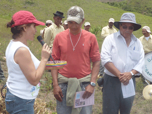

EL FREJOL: ALIMENTO DE TODOS LOS DÍAS
LA VARIEDAD INIAP 483 ÍNTAG
RESISTE Y RINDE MÁS
Un sorprendente rendimiento del cien por ciento y una resistencia a tres enfermedades son los sorprendentes ventajas de una variedad inteña de fréjol. Miembros de la Corporación de Producción Agrícola Íntag Sustentable (CORPAIS) recibieron la variedad de fréjol “INIAP 483 ÍNTAG” del Comité de Investigación Agrícola Local (CIAL), compuesto por los agricultores de la CORPAIS. La finca de Abel Játiva, en Tollo Íntag, fue el escenario del evento el 9 de septiembre.
La variedad de fréjol tiene lo que los científicos denominan una “resistencia genética múltiple A”. En el caso del fréjol inteño, esto quiere decir que resiste a tres tipos de enfermedades: la mancha angular, la antracnosis y la roya. Pero hay más: un solo grano produce 110 granos, lo que significa un rendimiento de un ciento por ciento. Es de destacar la participación del Colegio José Peralta, de la parroquia de Peñaherrera, en el ensayo de la leguminosa.
La importancia de esta nueva variedad de fréjol se reflejó en la alta categoría de funcionarios que su lanzamiento reunió: la doctora Gioconda García, directora de la Estación Experimental Santa Catalina (EESC); el ingeniero Eduardo Peralta, líder del Programa Nacional de Leguminosas y Granos Andinos (PRONALEG-GA); la ingeniera Liliana Salgado, directora de Pro Derechos Ciudadanos (PRODECI); Janet Villaroel, técnica de Ayuda en Acción; el presidente de la CORPAIS, Mesías Jácome, y sus socios frejoleros, docentes del Colegio Técnico Agropecuario José Peralta y sus alumnos.
EL nacimiento de INIAP 483 ÍNTAG
La nueva variedad de fréjol arbustiva, INIAP 483 ÍNTAG, se originó en la cruza simple y la retrocruza entre dos fréjoles. Científicos de PRONALEG-GA, del INIAP, hicieron la cruza en el 2003 en sus laboratorios. Esto fue una simple colocación del polen de una planta de fréjol, con buena producción, en las anteras donde se encuentra el polen de la otra planta con resistencia a la mancha angular, la antracnosis y la roya. La maniobra dio lugar a una nueva semilla de fréjol.
El siguiente paso fue una larga serie de estudios en la granja experimental de Tumbaco en los años 2005 y 2006, y ensayos de adaptación y rendimiento hasta el 2009. Finalmente, fue seleccionada por la resistencia a las enfermedades mencionadas, su vaina larga y su grano de color morado moteado. En los años 2007 y 2008, la variedad fue sembrada por el CIAL de Íntag. Estos ensayos llevaron a la entrega oficial de la variedad este año a los frejoleros de la CORPAIS.
Protagonistas y bondades
Los ingenieros Ángel Murillo, Eduardo Peralta, Nelson Manzón, Diego Rodríguez y José Pinzón, junto a miembros del CIAL de Íntag, hicieron la investigación de la variedad. El CIAL seleccionó la variedad por una larga lista de características positivas: el vigor de la planta, la alta resistencia genética a las enfermedades citadas, la cantidad de vainas que produce, el tipo erecto de la planta, la maduración uniforme, el color, la forma y el tamaño del grano, la adaptabilidad al valle de Íntag entre 1200 y 2000 metros sobre el nivel del mar, el rendimiento en grano seco de entre 25 y 34 quintales por hectárea y la demanda aquí en el país y en el mercado de Colombia.
Pero hay más: aparte de resistir a las plagas y enfermedades, tiene un excelente concentrado de nutrientes. El 23,37 por ciento del leguminoso consisten en proteína mientras el contenido de 1,30 de grasa es muy bajo, o sea, saludable, y provee un 63,99 por ciento de carbohidratos y el 7,06 por ciento de fibra. Además, el fréjol es rico en los minerales como el calcio, necesario para mantener los huesos en óptimo estado; el potasio, que promueve el buen funcionamiento del corazón; el hierro, esencial para evitar la anemia; y otros elementos que contribuyen al buen funcionamiento del organismo.
Lanzamiento de la variedad
Luis Robalino dio la bienvenida a las autoridades del INIAP y a los productores de fréjol, a nombre de la Corporación Toisán. Indicó que las autoridades provinciales están pensando reenfocar el plan de desarrollo porque Imbabura no tiene un potencial agrícola, pero que en Íntag esto no es verdad. Asimismo, resaltó la participación de agricultores y estudiantes inteños e instituciones y autoridades del INIAP en la investigación de la variedad INIAP 483 ÍNTAG.
Por su parte, el ingeniero Peralta describió el esfuerzo de siete años que finalmente dio frutos en una variedad de fréjol arbustivo de grano morado moteado. Afirmó que Darwin Cevallos, morador de la parroquia de Peñaherrera, hizo el fréjol el tema de su tesis de grado. La investigación del estudiante se basó en la siembra de 20 variedades. Luego, seleccionó 10, de las cuales la mejor resultó ser INIAP 483 ÍNTAG. Según el ingeniero Peralta, el señor Cevallos quería hacer algo que contribuyera a mejorar la productividad de la Zona cuyo potencial es grande. Asimismo, agradeció por el aporte económico de Ayuda en Acción y PRODECI a la investigación. También recalcó que las cosas en la actualidad están cambiando. “Antes, los técnicos mirábamos a los agricultores desde arriba”. Explicó como veían a los campesinos como individuos al servicio de los técnicos y a las fincas como tierras para sus ensayos. El papel del agricultor era prestar su tierra y cuidar y cosechar el cultivo sin participación activa en la investigación y sin compensación de ningún tipo. Ahora el técnico aprecia el conocimiento de los agricultores. Finalmente, indicó que con la nueva variedad, se elimina la necesidad de químicos de etiqueta roja, dañinos para la salud humana y el medio ambiente.
Paúl Gualotuña estuvo a cargo del proyecto de fréjol a través de PRODECI. En su intervención, dijo que por medio del Ministerio de Inclusión Económica y Social se espera fortalecer el banco de semillas de las organizaciones. Aseguró que el fréjol no se trata de una variedad transgénica ni híbrida, y que los agricultores la pueden propagar en sus propias fincas.
La ingeniera Salgado, por su parte, se mostró complacida por los resultados obtenidos de la investigación. Aseguró que hay que destacar la participación técnica y organizativa porque el desarrollo de una investigación es fruto de un proceso.
Mesías Jácome, presidente de la CORPAIS, dijo que si los agricultores abandonan el campo el país no vive. “Nosotros somos los que damos vida. Por eso estamos capacitándonos para que el Gobierno no abandone a los agricultores”, finalizó.
Por su parte, René León, presidente del Comité de Investigación Agrícola Local (CIAL), habló de la necesidad de aumentar la producción para bajar los costos. Agradeció al ingeniero Gualotuña y a Ruth Almeida por ser los pilares para que salga adelante la agricultura del fréjol. También dijo que el futuro de Íntag no es la minería. El fréjol es el que da de comer a los campesinos y a la población de las ciudades.
La ingeniera Villarroel insistió en que el mundo aprenda a respetar a los agricultores por sus años de experiencia. Además, afirmó que son los que producen el 80 por ciento de la comida para el país. Aseguró que si se unen los conocimientos de los técnicos y agricultores, servirá como cimientos para el futuro, afirmo.
La presidenta de la Coordinadora de Mujeres de Íntag, Isabel Anangonó, dijo que las miembros de su organización han apostado por la agricultura. Dijo que es hora de dejar el machismo a un lado y también de reclamar por un precio justo por los productos. El agricultor trabaja bajo el sol y la lluvia y por su esfuerzo no es recompensado. Ya es hora de que esto cambie, concluyó.